Bounce Back
Lessons in decision-making, teamwork, and resilience from the NBA’s greatest players.
Email: kingmatayo.thefirst@gmail.com
Chapters
Introduction
This introduces the book and me - the author
12/20/2024
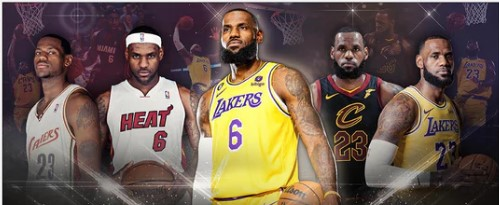Chapter 1: LeBron James
The chapter looks at the evolution of LeBron’s shot choices (2003–2024)
12/07/2024
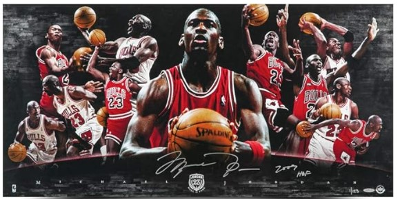Chapter 2: Michael Jordan
This chapter explores Michael Jordan's ability to deliver in high-pressure moments and his relentless competitive spirit.
12/15/2024
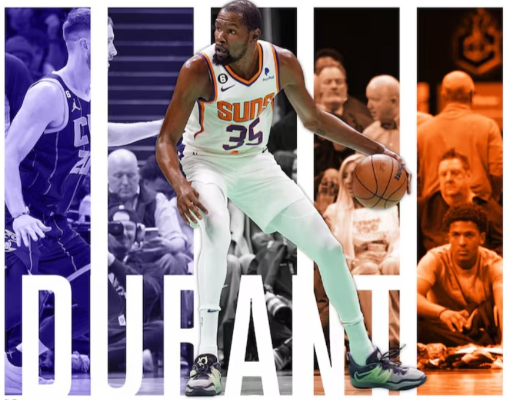Chapter 3: Kevin Durant
This chapter examines Kevin Durant’s career through the lens of adaptability, personal growth, and resilience.
12/15/2024
Chapter 4: Larry Bird
This chapter delves into Larry Bird’s basketball IQ and strategic thinking.
12/15/2024
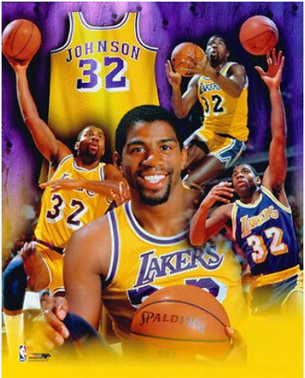Chapter 5: Magic Johnson
This chapter delves into Magic Johnson’s unique leadership style and how he elevated the performance of his teammates.
12/15/2024
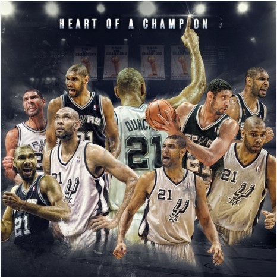Chapter 6: Tim Duncan
This chapter focuses on Tim Duncan’s understated but highly effective leadership style.
12/15/2024
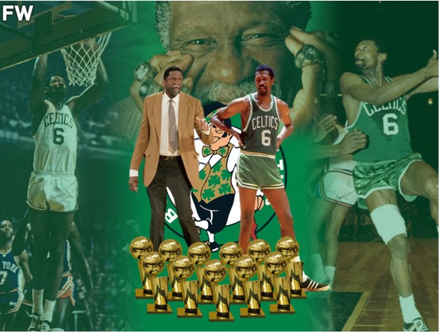Chapter 7: Bill Russell
This chapter highlights Bill Russell’s legacy as a defensive anchor and team leader who prioritized collective success over individual accolades.
12/15/2024
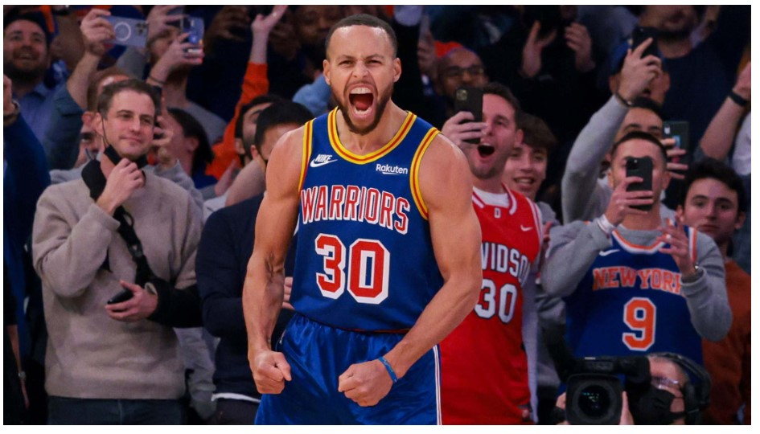Chapter 8: Stephen Curry
This chapter explores Steph Curry’s transformative impact on the NBA, focusing on how his revolutionary shooting and off-ball movement redefined team strategies.
12/15/2024
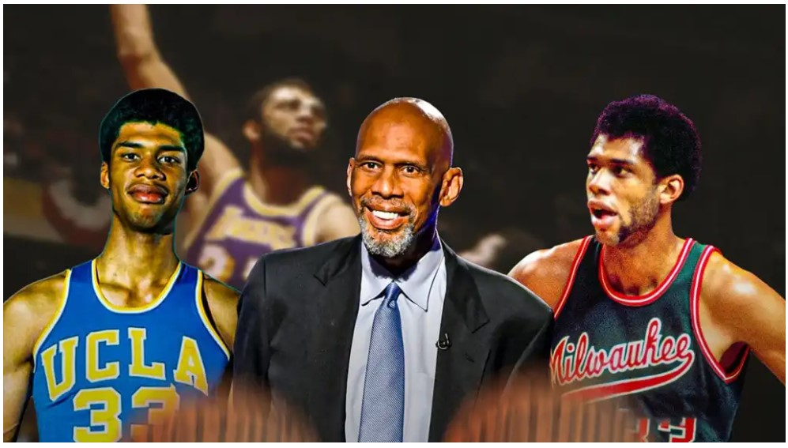Chapter 9: Kareem Abdul Jabbar
This chapter highlights Kareem’s unparalleled career, focusing on how his Skyhook redefined basketball and his ability to sustain excellence across decades.
12/15/2024
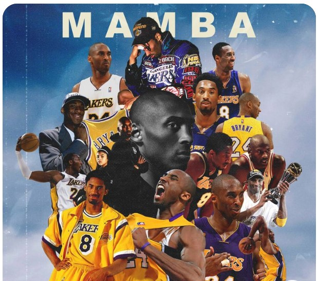Chapter 10: Kobe Bryant
This chapter explores Kobe Bryant’s obsessive work ethic and “Mamba Mentality,” focusing on how relentless preparation and resilience shaped his career.
12/15/2024
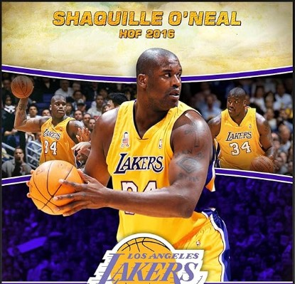Chapter 11: Shaquille O'Neal
This chapter highlights Shaq’s physical dominance and larger-than-life persona, exploring how embracing unique strengths can lead to extraordinary impact.
12/15/2024
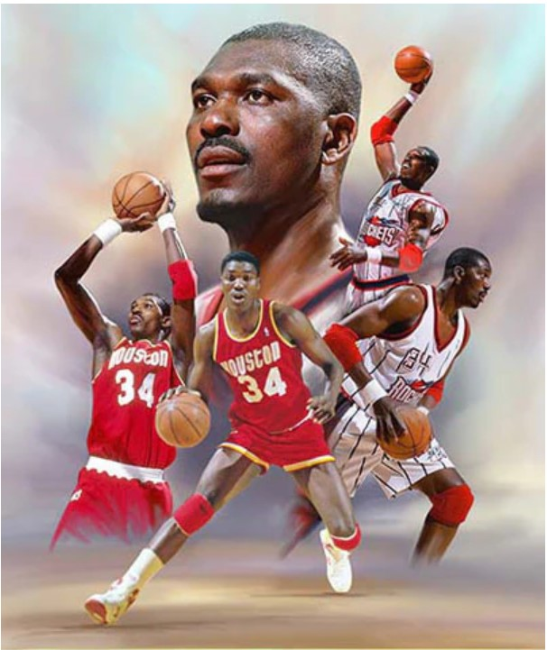Chapter 12: Hakeem Olajuwon
This chapter focuses on Hakeem’s precision, patience, and mastery of fundamentals, particularly his footwork.
12/15/2024

Appendix A
This first appendix looks at how entrepreneurship is similar to shooting from the 3PT line
12/20/2024

Appendix B
This second appendix looks at shot choices through the lens of prospect theory
12/20/2024